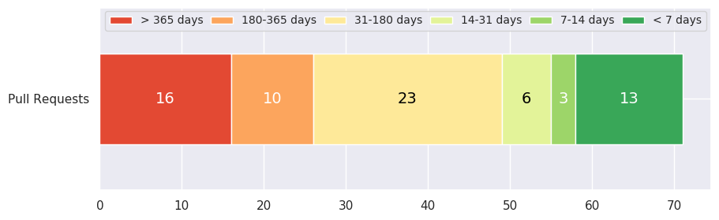

Welcome to OpenCV pull requests statistics page!
¶
Pull Requests age distribution
¶

Problematic pull requests
Stable reproducers
WIP
Problem: pr: needs rebase
Problem: incomplete
Problem: pr: needs test
Age distribution
Overview
Age distribution by categories
Age distribution by age categories
Pull Requests with age: < 7 days
Pull Requests with age: 7-14 days
Pull Requests with age: 14-31 days
Pull Requests with age: 31-180 days
Pull Requests with age: 180-365 days
Pull Requests with age: > 365 days
Changes distribution
Overview
Changes distribution between the modules
Changes distribution in absolute values
Categories distribution
Overview
Pull requests with auto assigned categories
OpenCV pull requests statistic
Navigation
Problematic pull requests
Age distribution
Changes distribution
Categories distribution
Related Topics
Documentation overview
Next:
Problematic pull requests
Quick search